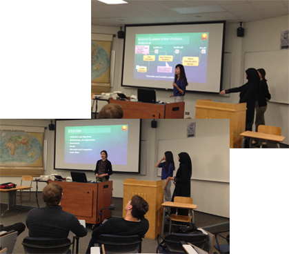
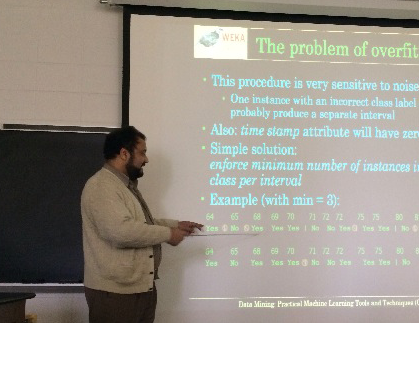

Research in the Evolutionary Computation & Machine Learning (ECML) Lab is centered around Genetic and Evolutionary Algorithms, Machine Learning and the intersection/ cross-fertilization of the two fields.

We conduct research in genetic algorithm methodologies and applications in science and engineering with emphasis on using machine learning approaches to enhance evolutionary optimization.

We also develop, apply and analyze machine learning approaches for numerous Bioinformatics and computational biology domains.